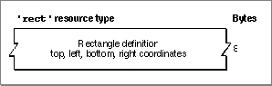

The Rectangle Resource
A rectangle resource describes the display area for the controls of a monitors
extension. A rectangle resource is a resource of type'RECT'and must have a resource ID of -4096. You specify the rectangle coordinates as top, left, bottom, and right.
Figure 8-20 shows the compiled version of a rectangle positions resource.Figure 8-20 Structure of a compiled rectangle (
'RECT') resource
When enlarging the Options dialog box, the Monitors control panel places the upper edge of the new display area immediately below the lower edge of the area containing the standard controls.When you assign coordinates to your controls, assume that the origin (that is, the upper-left corner) of the display area for your items is at (0,0). In this coordinate system, the area bounding the standard controls (such as the OK and Cancel buttons) has a right coordinate of 319 and a negative top coordinate. See "Defining a Rectangle for a Monitors Extension" on page 8-52 for an example.
Before displaying the controls defined by your monitors extension, the Monitors control panel changes the coordinates of your controls, using the coordinate system of the Options dialog box. To get the true locations of your dialog items, use the Dialog Manager's
GetDialogItemprocedure; see the chapter "Dialog Manager" in Inside Macintosh: Macintosh Toolbox Essentials for information on this procedure.